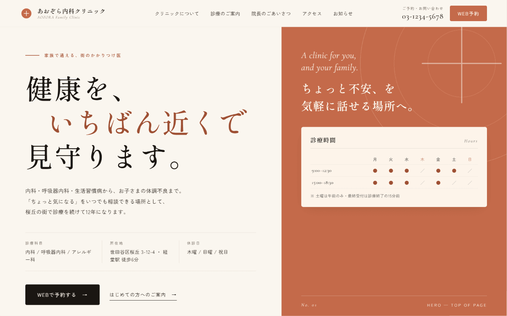
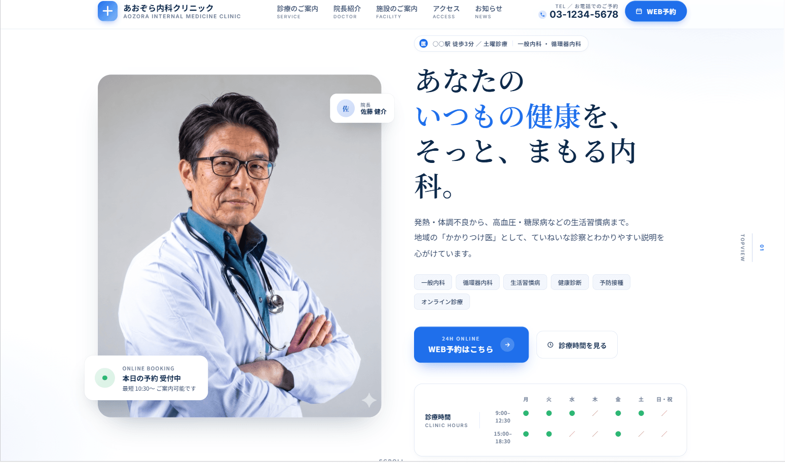
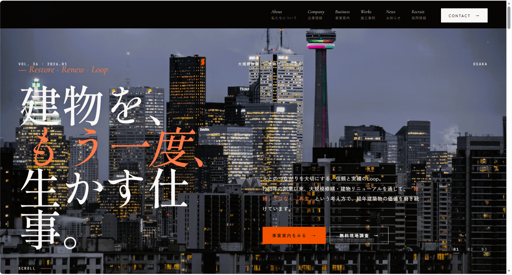
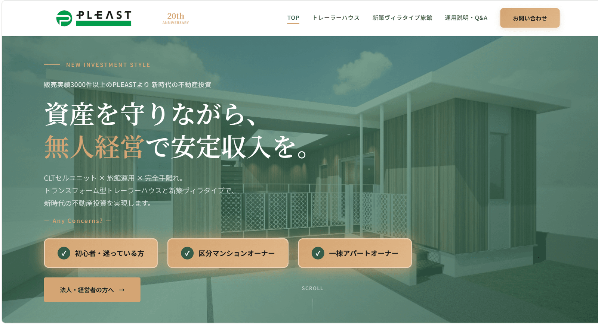
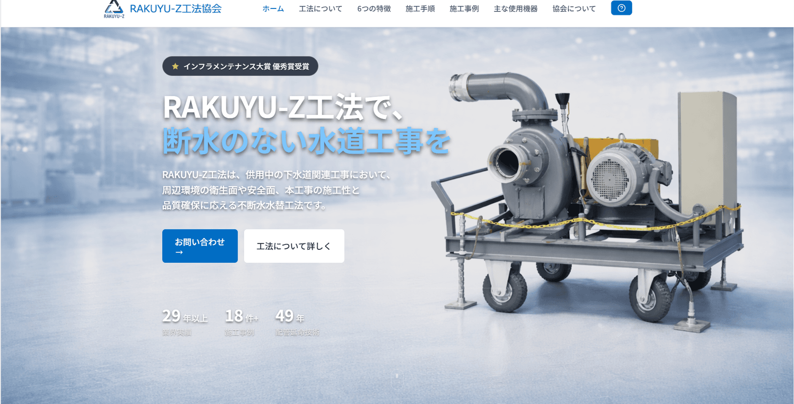
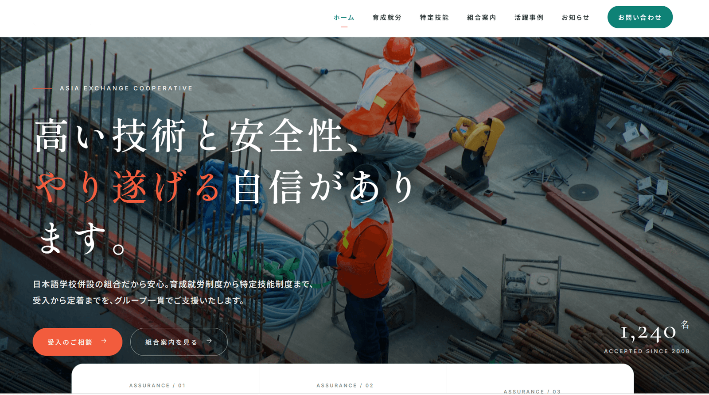
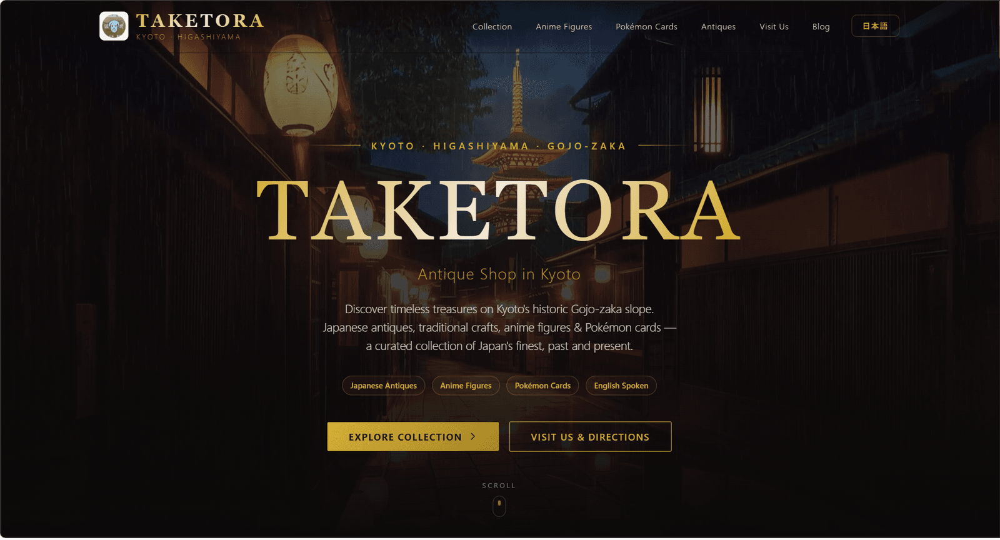
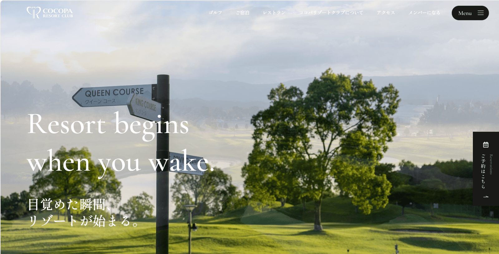
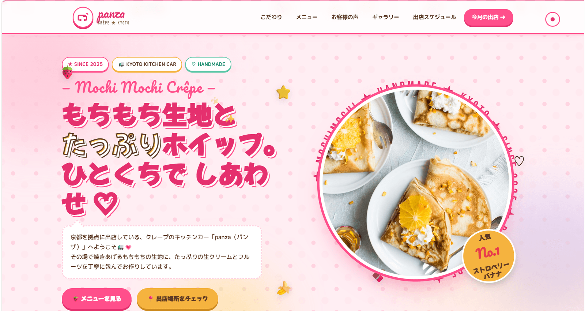

ホームページ制作会社が多すぎて、
どこに頼めばいいか分からない
京都のホームページ制作会社 — NORTIQ LABS
京都の中小企業のための、
集客できる
ホームページ制作。
「作って終わり」ではなく、問い合わせが増えるサイトへ。
戦略設計から制作・運用まで、米国水準の技術で一貫して伴走します。
- 制作・支援実績20社
- Core Web Vitals「良好」を標準担保
- 初期費用30万円〜
制作・支援実績20社
京都拠点・全国オンライン対応
営業日24時間以内に返信
初期費用30万円〜
対応業種・実績 SUPPORTED INDUSTRIES
クリニック・医療
不動産
建築・リニューアル
外国人材組合
小売・越境EC
工法協会
メディア・コンテンツ
採用LP
士業・サービス業
クリニック・医療
不動産
建築・リニューアル
外国人材組合
小売・越境EC
工法協会
メディア・コンテンツ
採用LP
士業・サービス業
実績ストリップ
京都を中心に、
京都を中心に、
業種を横断して支援。
これまで20社の制作・DX支援を、7業種にわたって手がけてきました。業種ごとの事情に合わせて、集客と問い合わせにつながる設計を積み重ねています。
- 戦略設計
- 制作
- 運用
- 一貫して伴走
- 制作・DX支援
- 20社
- 対応領域
- 7業種業種横断
- Core Web Vitals
- 良好標準担保
- 一次返信
- ≤24h営業日
こんなお悩み、ありませんか
こんなお悩み、ありませんか
せっかく作ったのに、問い合わせや
予約がほとんど増えない
公開したきり放置され、更新も
改善も止まってしまった
「AIで集客できます」と言われても、
中身の説明がなく不安
一つでも当てはまるなら、見た目ではなく「設計」から見直す価値があります。
提供価値
Nortiq Labs は
Nortiq Labs は
「公開して終わり」にしません
見た目を整えるだけでなく、問い合わせにつながる導線そのものを設計します。
集客前提の設計
ファーストビュー・CTA配置・フォーム設計まで、コンバージョンの視点で構造化します。
業種特化のオリジナルデザイン
テンプレートの流用ではなく、業種とブランドに合わせて毎回ゼロから設計します。
運用まで伴走
月次アクセスレポートと定期ミーティングで、公開後も改善し続けます。
制作実績
数字で見る、
数字で見る、
制作実績.
京都・関西の中小企業を中心に、業種を横断して成果を出してきました。

問い合わせ2.4倍
あおぞら Family Clinic

予約数+83%
あおぞら内科クリニック

現場工数38%削減
建物リニューアル・大規模修繕
その他の制作実績






PRICING
料金プラン
「いくらかかるのか分からない」をなくすため、開始価格を明示しています。
含まれる範囲と納期の目安は、ご相談時にすべてお伝えします。
ホームページ制作
集客と問い合わせ獲得を前提に設計します。
FROM¥300,000〜
- WordPress / Next.js から最適選定
- 集客前提のオリジナル設計
- Core Web Vitals「良好」標準担保
- SEO内部対策
- 運用・保守プラン
AIチャットボット
更新の停滞を解消する自社プロダクト。
FROM¥100,000〜
- 質問するだけで記事が書ける投稿ツール
- 対話式UI（8ステップ）
- SEO最適化＋競合分析
- 3つのチェックポイント
- PC / モバイル両対応
DX・ML実装
業務自動化から生成AIの業務組み込みまで。
FROM¥500,000〜
- 業務自動化・ワークフロー
- データ分析基盤の構築
- 生成AIの業務組み込み
- Human-in-the-loop 設計
- 内製化引き継ぎ
※ IT導入補助金などの活用も、進め方からご相談いただけます。上記は開始価格です。規模・期間に応じて柔軟にご提案します。
NORTIQ LABS
が
選ばれる理由WHY
01
米国水準の技術背景
米国基準の
設計思想
20年遅れと言われる日本のDXを、米国基準の設計思想でアップデートします。最新の事例を、日本の中小企業の現場に翻案します。
02
表示速度と使い心地
Core Web Vitals
「良好」を標準担保
表示速度と使い心地を、最初から作り込みます。集客と問い合わせ獲得を前提とした実装基準で仕上げます。
03
公開して終わりにしない
制作後も
運用まで伴走
月次レポート・定期訪問・改善ミーティングで、「公開して終わり」にしません。公開後も成果を伸ばし続けます。
04
更新を止めない仕組み
AIツールで
SEOを継続強化
自社開発のAI記事ツールと内部対策で、更新を止めずに育てます。書く時間が取れない、を構造で解決します。
- 20制作・支援実績FY2025
- 良好Core Web Vitals標準担保
- 2025設立京都拠点
- ≤24h一次返信SLAbusiness day
- 7対応業種industries
FLOW
ご依頼から公開、その後まで
営業日24時間以内に一次返信。営業のための営業はしません。
-
1
無料相談
課題と目的をヒアリング。ご相談は無料です。
無料 -
2
設計・
お見積もり構成案と費用を明確にご提示します。
明朗見積 -
3
制作
デザインから実装まで、進捗を共有しながら進めます。
進捗共有 -
4
公開
公開前に動作と表示速度を最終チェックします。
最終チェック -
5
運用サポート
月次レポートと改善提案で、成果を伸ばし続けます。
継続伴走
お客様の声
ご利用いただいた
ご利用いただいた
企業様の声。
★★★★★
Webのプロが横にいる感覚を、初めて持てました。ブログ更新の負担がなくなり、SEO流入も伸びています。
AK
A.K. 様
クリニック・院長（京都）
★★★★★
他社は「AIできます」で止まりがちですが、Nortiq は実装の中身まで説明してくれて納得感がありました。
TM
T.M. 様
不動産・経営企画
FAQ
よくあるご質問
-
ホームページ制作は30万円〜です。ページ数や機能によって変わるため、無料相談で範囲を確認したうえでお見積もりします。
-
規模によりますが、コーポレートサイトでおおよそ4〜8週間が目安です。お急ぎの場合もご相談ください。
-
はい。オンラインでの打ち合わせに対応しており、関西圏を中心に全国からご相談いただけます。
-
IT導入補助金などの活用を視野に、進め方をご相談いただけます。（申請サポートは準備中です。）
-
軽微な修正・テキスト変更は、契約中の保守プラン内で対応可能です。大規模な変更は別途お見積もりとなります。
FINAL STEP
まずは
まずは
無料で
ご相談ください。
「何から始めればいいか分からない」段階でも大丈夫です。営業日24時間以内に、担当者よりご返信します。
- 営業日24時間以内に返信
- 京都拠点・全国オンライン対応
- ご相談は無料・しつこい営業なし
- ご相談内容は厳格に管理
A
無料サイト診断
30項目チェックリストで現状把握。ご相談とあわせてどうぞ。